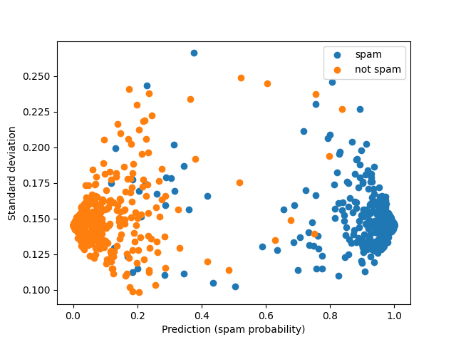

Note
Click here to download the full example code
Plotting Classification Forest Error Bars¶
This example demonstrates the calculation of confidence intervals for
sklearn.ensemble.RandomForestClassifier objects.
The data used here are synthetically generated to simulate a data-set in which
email messages are labeled as spam based on 20 different features (the default
of sklearn.datasets.make_classification()).

- 
import numpy as np
from matplotlib import pyplot as plt
from sklearn.model_selection import train_test_split
from sklearn.ensemble import RandomForestClassifier
import forestci as fci
from sklearn.datasets import make_classification
spam_X, spam_y = make_classification(5000)
# split the datainto training and test set
spam_X_train, spam_X_test, spam_y_train, spam_y_test = train_test_split(
spam_X, spam_y,
test_size=0.2)
# create RandomForestClassifier
n_trees = 500
spam_RFC = RandomForestClassifier(max_features=5, n_estimators=n_trees,
random_state=42)
spam_RFC.fit(spam_X_train, spam_y_train)
spam_y_hat = spam_RFC.predict_proba(spam_X_test)
idx_spam = np.where(spam_y_test == 1)[0]
idx_ham = np.where(spam_y_test == 0)[0]
# Histogram predictions without error bars:
fig, ax = plt.subplots(1)
ax.hist(spam_y_hat[idx_spam, 1], histtype='step', label='spam')
ax.hist(spam_y_hat[idx_ham, 1], histtype='step', label='not spam')
ax.set_xlabel('Prediction (spam probability)')
ax.set_ylabel('Number of observations')
plt.legend()
# Calculate the variance
spam_V_IJ_unbiased = fci.random_forest_error(spam_RFC, spam_X_train,
spam_X_test)
# Plot forest prediction for emails and standard deviation for estimates
# Blue points are spam emails; Green points are non-spam emails
fig, ax = plt.subplots(1)
ax.scatter(spam_y_hat[idx_spam, 1],
np.sqrt(spam_V_IJ_unbiased[idx_spam]),
label='spam')
ax.scatter(spam_y_hat[idx_ham, 1],
np.sqrt(spam_V_IJ_unbiased[idx_ham]),
label='not spam')
ax.set_xlabel('Prediction (spam probability)')
ax.set_ylabel('Standard deviation')
plt.legend()
plt.show()
Total running time of the script: ( 0 minutes 8.342 seconds)